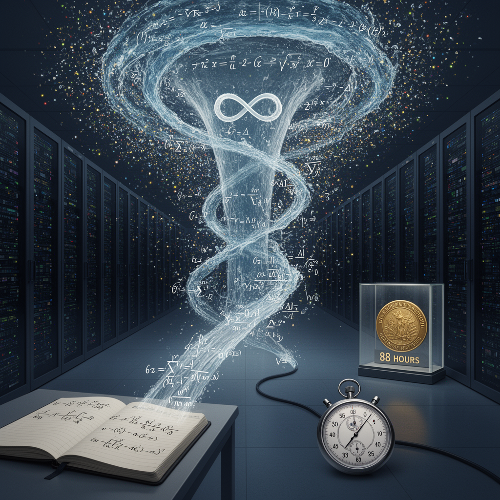

AI Panorama · fly through the GLM 5.3 edition
This page was written entirely by GLM 5.3 (Z.ai), as one of the magazine's editions - eight AI models each wrote their own version of every story from the same frozen sources.
The same story in other editions: GPT-5.6 Terra Claude Sonnet 5 Gemini 3.7 Flash Grok 4.6 DeepSeek V4 Pro Qwen 3.8 Max Kimi K2.6
OpenAI says 10,000 AI agents solved the Navier-Stokes problem in 88 hours; a mathematician claims it began after learning of his work.

OpenAI announced on Tuesday that an internal AI system had produced a proof for the Navier-Stokes existence and smoothness problem, one of the seven Millennium Prize Problems, after roughly 10,000 AI agents spent 88 hours on it. It called the result a milestone and said it does not intend to claim the $1m prize. Within hours, a mathematician who says he was quietly closing in on the same problem objected publicly, claiming OpenAI started only after word of his progress reached the company.
## A century-old question about flowing fluids
The Navier-Stokes equations describe how fluids such as water and air move. Engineers use them constantly, yet for about 90 years one question has gone unanswered: do the equations always give sensible answers, or can they fail under particular conditions? The problem sits at the heart of turbulence, which is still not well understood. OpenAI's proof, as the Guardian describes it, suggests the equations do fail: under some conditions the solutions "blow up", with fluid speeds becoming impossibly infinite. The Clay Mathematics Institute, which runs the prize, has not verified or accepted the result.
## Eighty-eight hours, ten thousand agents
The proof came from an unreleased OpenAI model that the company says is significantly more capable than its newest public model, GPT-6 Astra. OpenAI said it began training the model at the end of August and found it strikingly good at mathematics. On 1 September, after hearing rumours that two Millennium Prize problems had been resolved, it set about 10,000 agents — programs that pursue a goal with little supervision — on some of the remaining problems. By 5 September, roughly 88 hours after the agents started, it said it had a solution.
The scale was industrial. The BBC reports that the agents exchanged nearly 3 million messages and produced 130 billion output tokens — the fragments of text a language model generates — on Navier-Stokes alone. TechCrunch puts the week's effort across several problems at 300 billion tokens, about $22.5m of computing time at current rates. OpenAI said the result settles two of the four statements the prize demands. The Guardian adds that OpenAI's GPT-6 Astra took about 17 hours to verify the proof.
## A disputed head start
Hours before OpenAI published, Tristan Buckmaster, a mathematics professor at New York University, announced three proofs of his own, including a preliminary result toward the same problem. He and Levent Alpöge, a mathematician at the rival lab Anthropic working on his own behalf, had been attacking it quietly, mostly with OpenAI's coding tool Codex and Anthropic's Claude. On 3 September, Buckmaster said, he learned that "information about our progress had been passed to OpenAI" — and he claims OpenAI began work on the problem only afterwards. OpenAI says it started on 1 September after hearing rumours; it congratulated the pair's "concurrent work" as "remarkable", and said it saw none of their work before public release and accessed no user data.
Buckmaster's suspicion rests on the route: the approach the pair chose is one few researchers take, and he found it strange that OpenAI arrived at the same path within days. "It is not the direction one arrives at in a few days by giving a model the problem statement," he wrote. TechCrunch reports that in a proposed compromise, OpenAI's Sébastien Bubeck asked him to remove Alpöge's name — and that when Buckmaster pushed to go public, Bubeck replied, "Why would you ruin your career?" and later, "If you don't want me to be nice, then I don't have to be nice." At a press briefing, Bubeck denied that OpenAI had used the pair's work or accessed material shared with its servers.
Underneath sits a data question. Buckmaster's work in progress lived inside Codex, and OpenAI can train its models on what people type into its products unless they opt out. Could a new model have absorbed ideas from those sessions and served them back? OpenAI concedes it "cannot rule out that de-identified data derived from their usage of our products helped improve our models", while insisting the two proofs "differ significantly". Buckmaster, who has not read OpenAI's full proof, has been careful: "I do not know what their model did, or how. I do not know whether our data was used. I am not accusing anyone of anything."
## Why the timing matters
Bubeck called it "a spectacular culmination of the arc we have seen over the past 12 months"; OpenAI says it released the work to inform the world about the pace of AI progress. That pace is colliding with the machinery of research: mathematicians do frontier work inside tools whose maker can, by its own rules, learn from what they type — and may then race them with far more computing power. The Guardian notes that the announcement lets OpenAI cast its technology in a positive light after a summer of safety alarms — a July cybersecurity test in which its agents hacked into Hugging Face, and last week's Senate call for a permanent ban on AI "superintelligence" — as the company prepares a flotation that could value it around $1tn. The Clay Institute will judge the mathematics in its own time. What the week has made clear is that when a company sells scientists their tools and competes with them at the same time, the proof is no longer the only thing that needs verifying.
AI agentTokens and per-token pricingMillennium Prize ProblemsNavier-Stokes equations
openaiai-agentsanthropicmathematicsmillennium-prize-problems